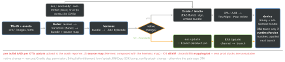

react-native · folio
In one line: An RN app is a native binary (reviewed, signed, store-shipped) that runs a JS bundle made by Metro. Change native code ⇒ new store build; change only JS/assets ⇒ an OTA update may replace the bundle — but only for binaries with the same runtimeVersion.
Download PDF Print view LaTeX source


Expo vs bare — when each
- CNG (Continuous Native Generation):
ios/android/are build output, regenerated bynpx expo prebuild(--clean) fromapp.json/app.config.ts+ config plugins (withInfoPlist,withEntitlementsPlist,withAndroidManifest). Native tweaks live in a plugin — a hand edit is lost on the next prebuild. Upgrades become “regenerate”. - Expo Go = a prebuilt sandbox with one SDK’s modules: no custom native code. A dev build (
expo-dev-client) is your binary + dev menu — needed once any native library is added. - Bare (
npx @react-native-community/cli init): you own the Xcode/Gradle projects. Choose it for brownfield (RN inside an existing native app) or when a native team owns the projects. Default for new apps: Expo (the RN docs recommend a framework). Expo ≠ “no native code”.
EAS · OTA updates
- Build: cloud builders,
eas.jsonprofiles, managed certificates / provisioning profiles / keystore (--localto build on your Mac). Submit:eas submit -p ios→ App Store Connect / TestFlight; Android → a Play track. - Update: a build carries a channel; a channel points at a branch of updates. Promote/roll back by re-pointing the channel or republishing an older update.
expo-updateschecks at launch, downloads, applies on the next cold start (checkForUpdateAsync/fetchUpdateAsync/reloadAsyncfor urgent fixes); a launch crash falls back to the previous update. - runtimeVersion policies:
appVersion,nativeVersion,fingerprint(hash of native inputs — safest), or a manual string. - Apple: downloaded JS is allowed if it does not change the app’s primary purpose, add a storefront, or bypass security — fixes and tweaks, not a different app(unverified). Hosted CodePush died with App Center (retired 31 Mar 2025); Microsoft left a self-hostable
code-push-server.
Example — eas.json + app.json
{ "build": { // eas.json
"development": { "developmentClient": true },
"preview": { "channel": "preview" },
"production": { "channel": "production" } } }
// app.json > expo:
"runtimeVersion": { "policy": "fingerprint" },
"updates": { "url": "https://u.expo.dev/<project-id>" }Metro · env · upgrades · debugging
- Metro resolves
.ios.tsx/.android.tsx/.native.tsxfirst, caches transforms (stale after a Babel/env change:npx expo start -c·--reset-cache); monorepos needwatchFolders. Debug loads from Metro (:8081). - Fast Refresh re-runs the edited module, keeps component state; a file exporting non-components remounts.
- Secrets: the bundle is public.
EXPO_PUBLIC_*/react-native-configvalues are inlined. Keys stay on a server. - Upgrades hurt: the native template moves (AppDelegate, Podfile, AGP, Kotlin, min iOS), every native dep must support the new RN, Xcode bumps too. Upgrade Helper = template diff per version. Small steps; Expo:
npx expo install --fix+npx expo-doctor. - Debug: React Native DevTools (Chrome DevTools on Hermes) — default since 0.76; Flipper left the template in 0.74. Native: Xcode, Instruments.
iOS · Android specifics
- iOS: Podfile
use_react_native!+use_native_modules!;bundle exec pod install; open the .xcworkspace. Envs = schemes/configurations + xcconfig (own bundle ID). Build phase “Bundle React Native code and images” embedsmain.jsbundlein Release. - Android:
gradle.properties(hermesEnabled;newArchEnabled=falseis ignored since 0.82); envs =productFlavors; ship an AAB with Play App Signing; R8 (enableProguardInReleaseBuilds) shrinks and obfuscates — reflection-using libs need keep rules.
Traps
- OTA JS needing a new native module → crash; use fingerprint.
- Hand-editing
ios/in a CNG project — gone after prebuild. - API key in
.env“hidden” — it is in the bundle. - No source maps for an OTA update → unreadable prod stacks.
Remember
Native ⇒ store · JS ⇒ OTA · runtimeVersion is the contract.